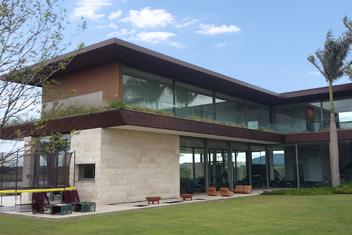

Fazenda Boa Vista
Categoria: Diversos
Arquiteto: Studio Arthur Casas
Descrição: Projeto de residência de alto padrão localizado na Fazenda Boa Vista, caracterizado pela integração entre espaços internos e externos e pelo uso de materiais naturais.
Materiais Utilizados: Mármore travertino, quartzito e granito
Nosso Trabalho: Fornecimento e aplicação de pedras naturais em áreas sociais e íntimas.
Galeria:

